Understand How A Neural Network Works Using F#
In this post I will show off a small F# library that allows for the creation of scalable fully-connected neural networks. I will use it to explain how forward and back propagation work via code examples. If you find any mistakes let me know and I will make the necessary changes.
Combining the creation of this library with guides about backpropagation helped me a lot with understanding neural networks and how they worked. I would recommend this as a simple project that could be helpful to learn new languages (especially functional ones) as it requires the use of a lot of fundamental programming language concepts.
Forward Propagation
Neural networks consist of interconnected nodes organised in layers. They learn by adjusting the weights of connections between neurons during training, using techniques like forward and backward propagation to minimise the difference between predicted and actual outputs. By training the network on labeled data, neural networks can generalise patterns to make predictions on new data.
Single Layer Forward Propagation
A single forward propagation though a layer just involves multiplying the inputs to the layer with the layer weights (their dot product). After this, they are summed and the bias added before having the activation layer for that function applied. This will then be calculated for every layer using the outputs of the previous layer as the inputs to the next.
This can be represented with the following equation:

The number of neurons in the previous layer is:
The weight of the connection between neuron i in the previous layer and neuron j in the current layer is:
The output of neuron i in the previous layer is:
The bias term for neuron j in the current layer:
How can we represent this in F#? It is simple, we just split up the equation into several parts and pipe the output from one part to another. The List.map applies the function to every element in the list:
let forwardSingleLayer (bias : float) (weights : float list list) (inputs : float list) (activation : Activation) : float list =
weights
|> List.map (fun list -> List.map2 (*) list inputs)
|> List.map (fun list -> List.sum list + bias)
|> activateLayer activation
What is activateLayer? It is a function that is applied to each of the weighted sums to introduce non-linearity into the network:
The activateLayer function takes an activation and maps the corresponding activation function across the list before returning it. A small part of this function can be see below:
let activateLayer (activation : Activation) (input : float list) : float list =
match activation with
| Sigmoid ->
List.map (fun x -> 1.0 / (1.0 + exp(-x))) input
| Relu ->
List.map (fun x -> max x 0.0) input
Full Forward Propagation
That was a single layer, the process for the full forward propagation needs to apply the previous functions to every layer in the network using the outputs from the previous layer as the inputs to the next. We do this via following steps:
- First create an empty list the size of the network.
- Fold though the empty list using the accumulator to store the intermediate activated and unactivated output of all layers. This is done with the
forwardSingleLayer function from before. - Then add an extra layer containing only 1.0s to the end of the forward propagated output. This makes it easier when doing back propagation.
let forwardFull (parameters : Parameters) (inputs : float list) (layers : Layer list) : float list list =
List.init layers.Length id
|> List.fold (fun (acc : float list list) index ->
let biases, weights, activation =
parameters.biases.[index], parameters.weights.[index], layers.[index].activation
[forwardSingleLayer biases weights acc.[0] activation] @ acc)
[inputs]
|> List.append [List.init (List.last layers).outputDims float]
This will result in a list of output values that will probably be completely wrong. What we now want to do is work out how wrong they are. We will then adjust all the weights in the network by how much they contributed to the error. Once this is done we can just repeat the forward propagation and error calculation and update steps until the error is sufficiently low. In the next section we will work out how to calculate the error.
Calculating Error
To calculate the error in the output, the output of forward propagation and the target output are passed to a function that calculates the loss or error.
let getOverallError (targetOutputs : float list) (actualOutputs : float list) (loss : Loss) : float =
actualOutputs
|> List.map2 (lossFunction loss targetOutputs.Length) targetOutputs
|> List.sum
A loss function (L) quantifies the difference between the predicted outputs (y with hat) of the network and the actual target values (y). This can be used to calculate the total error via the following equation:
Here is how we can apply the loss function with F#. Similarly to the activation functions, the loss functions are supplied using pattern matching. In this case however, they return a function that can be applied wherever the particular value required instead of taking an returning a list. Part of lossFunction can be seen below. There are multiple loss functions that are supported, the ones you see here are mean squared error and mean absolute error:
let lossFunction (loss : Loss) (n : int) : float -> float -> float =
match loss with
| MSE ->
fun actual target ->
(1.0 / (n |> float)) * (actual - target) ** 2.0
| MAE ->
fun actual target ->
(1.0 / (n |> float)) * (abs (actual - target))
The choice of loss function depends on the type of problem being solved (e.g. mean square error for regression problems; mean absolute error for mostly Gaussian regression problems with outliers; or cross-entropy error for classification problems).
Back Propagation
Back propagation is more complex than the forward version. We need to go backwards through the network and modify each weight based on how much it contributed to the error.
Output Layer
For the output layer, we compute the derivative of the loss function with respect to the outputs. If L is the loss function and o represents a network output, the gradient is computed as:
Hidden Layers
For the hidden layers, the individual deltas for each node in the previous layer are found by propagating the error backward from the output. This involves calculating the error contribution from each node to the subsequent layers, represented as:

This formular calculates the error term for a neuron j by summing the contributions of errors from neurons in the subsequent layer k, weighted by the connection w between the neurons in each layer and multiplies it by the derivative of the loss function.
Click here to see how the chain rule is used to get the above equation
The contribution of the weights to the error can be calculated using the chain rule. The chain rule is a formula that expresses the derivative of the composition of two differentiable functions f and g in terms of the derivatives of f and g. It states the following:

To see how it works there is some good information on the wikipedia page
The chain rule is important in back propagation because it helps break down the calculation of how each weight affects the loss function into easier to manage components. Each weight's gradient is obtained by multiplying simpler derivatives through each layer. When updating the weights, the chain rule is applied as follows:
Where:

is the sensitivity of the loss function to the output of a specific neuron k.

is the derivative of the output of neuron k with respect to its input, simplifying to the weight between j and k.
is the effect of weight on the input of neuron j, which is the derivative of the activation function of neuron j.
This makes it much easier to calculate the contribution of a specific weight to the error. The result of applying the chain rule (combined with the equation for calculating the contribution of a neuron to the error in a hidden layer) means that the derivative of the loss with respect to a specific weight is given by the much simpler equation:
This value is then used to update the weights. We multiply it by a learning rate that controls how large the weight updates are between runs:
With this we have modified the weights based on their contribution to the total error! This means that in subsequent forward propagations the error will be lower (for the same specific input). Later when we train the network, we will constantly be updating the weights and due to using lots of different inputs this contribution will fluctuate.
So how do we do this with F#? We first calculate the intermediate output sums. For the output layer, the only thing that needs to be done is for the derivatve of the loss function to applied to the outputs. For the hidden layers, we can utilise the chain rule. This simplifies the calculation so that the the individual deltas for each node in the previous layer are found. Afterwards, the layer weights are taken and multiplied by their matching deltas. The values coming into each node are then summed.
The new weights are then calculated. This is simpler. The derivative of the activation function is found and then multiplied by the corresponding output delta sum. This is then multiplied by the output of of the previous layer resulting in a value corresponding to learningRate * delta * outPrev. This value is then subtracted from the corresponding weight as back propagation is defined.
The new weights and intermediate output deltas are then returned.
let backPropSingleLayer (targetOutputs : float list) (loss : Loss) (learningRate : float) (backPropPart : float list) (layerIndex : int) (forwardPropParts : float list list) (allWeights : float list list list) (layers : Layer list) : float list list * float list =
let intermediateOutputDeltaSum =
if layerIndex = 0
then // Output layer
forwardPropParts.[layerIndex + 1]
|> List.map2 (dLossFunction loss targetOutputs.Length) backPropPart
else // Hidden layers
List.init forwardPropParts.[layerIndex + 1].Length (fun _ ->
forwardPropParts.[layerIndex]
|> dActivateLayer layers.[layerIndex - 1].activation
|> List.map2 (*) backPropPart)
|> List.mapi (fun index1 deltas ->
allWeights.[layerIndex]
|> List.mapi (fun index2 weights -> weights.[index1] * deltas.[index2]))
|> List.map List.sum
let newWeights =
forwardPropParts.[layerIndex + 1]
|> dActivateLayer layers.[layerIndex].activation
|> List.map2 (*) intermediateOutputDeltaSum
|> List.map (fun delta ->
forwardPropParts.[layerIndex + 2]
|> List.map (fun out -> learningRate * delta * out))
|> List.map2 (List.map2 (-)) allWeights.[layerIndex + 1]
newWeights, intermediateOutputDeltaSum
The full back propagation involved first reversing the parameters. This makes it easier to work on as we start from the final layer and work towards the input.
The next step is to fold through the network from the outer layer and calculate all the new values for each weight using backPropSingleLayer. This is then added to a list containing each layer and acts as the accumulator.
let backPropFull (layers : Layer list) (parameters : Parameters) (targetOutputs : float list list) (learningRate : float) (loss : Loss) (forwardPropParts : float list list) : (float list list * float list) list =
let weights =
List.rev parameters.weights
List.init (layers.Length) id
|> List.fold (fun acc index ->
let targetOutputs =
acc.[0]
|> fst
|> List.map List.sum
let backPropPart = snd acc.[0]
let backPropOutput =
backPropSingleLayer targetOutputs loss learningRate backPropPart index forwardPropParts weights layers
[backPropOutput] @ acc)
[targetOutputs, (List.concat targetOutputs)]
The derivatives of the activations and loss functions are very similar to the normal counter parts. Parts of the dActivateLayer and dLossFunction can be seen below:
let dActivateLayer (activation : Activation) (input : float list) : float list =
match activation with
| Sigmoid ->
List.map (fun x -> x * (1.0 - x)) input
| Relu ->
List.map (fun x -> if x > 0.0 then 1.0 else 0.0) input
let dLossFunction (loss : Loss) (n : int) : float -> float -> float =
match loss with
| MSE ->
fun actual target ->
(2.0 / (n |> float)) * (actual - target) * -1.0
| MAE ->
fun target actual ->
if actual > target then 1.0 else -1.0
Training
To train a neural network you repeatedly run forward and backwards propagation and then update the weights accordingly. We repeatedly try out different inputs to avoid the network learning a specific input.
Training the network in F# is a fairly simple recursive function that continually picks a random sample of the data set and carries out forwards and backwards propagation using the sample for any number of iterations. A simplified version of the function (initialisation and printing etc. removed) can be seen below:
let rec train (parameters : Parameters) (model : Layer list) (maxIterations : int) (iterations : int) =
let idx = System.Random().Next(0, List.length targetOutputs)
let fullSingle =
forwardFull parameters inputs.[idx] architecture
|> backPropFull architecture parameters targets.[idx] learningRate loss
|> weightUpdate parameters
train fullSingle model maxIterations (iterations + 1)
// This is called like below
train initial architecture iterations 0
Using the library
Defining a network
Networks can be specified using the following format. Any number of layers are supported. Provided they align, the dimensions can be as large as desired.
let network = [
{inputDims = 3; outputDims = 5; activation = Sigmoid};
{inputDims = 5; outputDims = 6; activation = Sigmoid};
{inputDims = 6; outputDims = 2; activation = Sigmoid};
]
You can choose from multiple different activation functions including:
- Relu
- Sigmoid
- Tanh
- Softmax
- Leaky Relu
- Elu
- Selu
- Softsign
- Softplus
- Exponential
- Hard Sigmoid
- Linear
Training a network
Input data is provided in the form of a list of inputs, and a list of labels corresponding to each input.
// Inputs
let data = [
[0.5; 1.0; 0.2];
[0.1; 0.7; 1.0];
[1.0; 0.1; 0.1];
[0.0; 0.34; 0.8];
[0.6; 0.1; 0.3]
]
// Labels
let labels = [
[1.0; 1.0];
[0.0; 1.0];
[0.0; 0.0];
[1.0; 0.0];
[0.0; 1.0];
]
To train and run the network, see the code snippets below:
// trainNetwork architecture labels data learning-rate loss iterations
let model = trainNetwork network labels data 0.05 MSE 100000
Currently, the following loss functions are avaliable:
- Mean Square Error
- Cross Entropy
- Mean Absolute Error
Running a trained network
A single run of the network can be specified as follows:
// runNetwork model input architecture
runNetwork model [0.1; 0.8; 0.4] network // [0.90643753; 0.99834754]
We can test multiple inputs by using a loop:
for idx in List.init (List.length data) id do
printfn "Input: %A" data.[idx]
printfn "Output: %A" (runNetwork model data.[idx] network)
This will print the following:
Input: [0.5; 1.0; 0.2]
Output: [0.9748251802; 0.9991071572]
Input: [0.1; 0.7; 1.0]
Output: [0.04458155893; 0.9556900964]
Input: [1.0; 0.1; 0.1]
Output: [1.150921027e-05; 0.03353754142]
Input: [0.0; 0.34; 0.8]
Output: [0.9681691113; 0.03517992806]
Input: [0.6; 0.1; 0.3]
Output: [0.003145187104; 0.9791424116]
These match up with the labels specified earlier.
Bugs
Be careful with the chosen parameters. The networks can die easily if the chosen parameters cause weigths to overflow and become NaN, alternatively the network won’t learn the data set correctly.
Acknowledgements
A lot of inspiration comes from this excellent blog post on backpropagation.
GitHub
The full project can be viewed on GitHub.
This Website
The goal of this website was to create an interactive static website using on HTML and CSS, no JavaScript. I had recently read an article about the quiet web which inspired me to try and create an interesting website that satisfied the requirements laid out in the blog post:
- Exclude any page that has ads.
- Remove them if they use Google Analytics or Google Fonts.
- Remove them if they use scripts or trackers.
These are arbitrary requirements but it seemed like an interesting challenge. On top of this, in the event that CSS was disabled, I also wanted my website to retain most of it's usability.
I am not one for frontend development and none of the previous versions of my site have used a JavaScript framework, however, in a previous iteration of my website I had a script that would allow you to change the theme between light mode and dark mode. I enjoyed this gimicky feature and wanted to keep that functionality.
Re-implementing theme toggle using only CSS
The main feature that I wanted to emulate using CSS was a theme toggle. I wanted to be able to click a button and have the theme change in case a user doesn't like the default one. With JavaScript I would watch for a checkbox and have an onchange event that makes the colour changes. Since this relies on JavaScript, this approach is not possible. So using only CSS we need some way to:
- Know that a checkbox has been checked.
- If the user previously had the theme activated then it should deactivate or vice versa.
- This needs to be dynamic and not just occur on page load but any time a user checks the checkbox.
- Ideally it accounts for the user's light/dark mode preferences.
Luckily, CSS has pseudo-classes. These are keywords that are attached to a selector and specify a state of the selected element, for example :hover is triggered when an element is hovered over. There exists the :checked pseudo-class which can be used to change the style of a checkbox or radio button based on whether or not it is checked. This satisfies the goal of making the change dynamic and controllable by the user.
However, there is a problem. CSS stands for Cascading Style Sheets. Styling in CSS will only apply to descendants of the the DOM node for the element (if the styling doesn't only affect the specific element i.e. margin will only affect the current element, but font-family will apply to the descendants). In either case, the inheritance only goes down the DOM tree and we cannot affect the properties of any parent elements.
We can have some degree of control over which descendants are affected by the styling through the use of the general sibling combinator. This seperates two seletors and matches all instances of the second element that appear anywhere after the first element that share the same parent element. For example, the following would match all span elements that come after the paragraph element in the DOM tree:
p ~ span {
color: red;
}
From the general sibling combinator docs we can see how this would work:
<article>
<span>This is not red because it appears before any paragraph.</span>
<p>Here is a paragraph.</p>
<code>Here is some code.</code>
<span>
This span is red because it appears after the paragraph, even though there
are other nodes in between
</span>
<p>Whatever it may be, keep smiling.</p>
<h1>Dream big</h1>
<span>
Doesn't matter how many or what kind of nodes are in between, all spans from
the same parent after a paragraph are red.
</span>
</article>
<span>
This span is not red because it doesn't share a parent with a paragraph
</span>
How does this help us? Well, since we can style elements based on the pseudo-class selectors, the CSS can be modified to change based on the checked state of a checkbox. Say we have a class for the checkbox called .theme-checkbox, we can do the following and change the font for siblings of an element based on whether the checkbox is checked:
.content {
font-family: Serif;
}
.theme-checkbox:checked ~ .container {
font-family: Monospace;
}
And in the HTML do something like this:
<input hidden class="theme-checkbox" id="theme" type="checkbox">
<div class="container">
<label class="theme-label" for="theme">Toggle Theme</label>
...
</div>
You can see that the checkbox and the container are siblings. This is important as we wouldn't be able to have the content as a descendant of the checkbox due to the nature of inputs. One strange thing it does mean, is that we have the label for the button not be a parent or sibling of the checkbox. This is not an issue as we use the for attribute.
Now that we have the general technique, we can utilise it for theme toggle. In this example we are using it to toggle light and dark mode:
:root {
--c-text: #3c3836;
--c-background: #fbf1c7;
--c-dark-text: #ebdbb2;
--c-dark-background: #282828;
}
@media (prefers-color-scheme: dark) {
:root {
--c-text: #ebdbb2;
--c-background: #282828;
--c-dark-text: #3c3836;
--c-dark-background: #fbf1c7;
}
}
.theme-checkbox:checked ~ .container {
--c-text: var(--c-dark-text);
--c-background: var(--c-dark-background);
}
.container {
color: var(--c-text);
background-color: var(--c-background);
}
We use CSS variables and change them based on whether the checkbox is checked. We can then reference these variables in the CSS (such as when we set the background and text colour) to update the colours accordingly.
We also utilise prefers-color-scheme to detect whether the alternative colour scheme should be light or dark. There is this neat codepen demo for determining whether your web browser supports this and what defaults to. This all means that the website will have the correct colour scheme for users if they toggle the theme.
One more problem arises. In this case, the checkbox is not part of the content and so it is unaffected by the styling. We cannot make it part of the container because it will never be able to affect the styling of it's parent. Luckily, since the label that you can click doesn't have to be a sibling of the checkbox itself, we can just hide the actual checkbox. Since the label can be clicked and we used the for attribute, it should still be accessible.
Storing theme across pages
Now there is a theme I can toggle without JavaScript (yay), but if I go to another page on the website, the theme resets. This is because there is no state stored between pages. If I were using JavaScript then I could use localStorage to store a flag that lets the website know which theme should be used. You could do this with three lines of JavaScript. Unfortunately, I want to do it with zero lines of JavaScript which sadly isn't possible. There is no way to access the localStorage without JavaScript or JQuery (or maybe some fancy HTML5 or something). This is a limitation of CSS, there is literally no way to solve this. You cannot persist the theme information across pages.
Luckily there is a solution. Have the entire website in just one page, this way there is nothing to persist across pages because there are no pages. The website can act as if there are multiple pages whilst actually having only one page, this can be done using the power of CSS and radio buttons. In the previous section we went over the :checked psuedo-class for checkboxes. Another input type also has it's own :checked psuedo-class: radio buttons. Radio buttons allow you to select one option from a set of multiple options. You can select only one option at a time which means that we can use the radio button to control what page we are on. Then we can use the :checked pseudo-class to either show or hide sections on the website depending on the 'page' that has been chosen:
.page1, .page2, .homepage {
display: none;
}
#homepage-button:checked ~ .homepage { display: block; }
#page1-button:checked ~ .page1 { display: block; }
#page2-button:checked ~ .page2 { display: block; }
By default all the pages will be hidden, and then when a radio button is selected, it will override the default styling and set the display to block making the section visible. Since we will want the main page of the website to be visible, we can make the homepage radio button the value that is checked by default.
<input type="radio" class="radio" id="homepage-button" checked>
<input type="radio" class="radio" id="page1-button">
<input type="radio" class="radio" id="page2-button">
This is all good, except radio buttons don't look like page links. We want this webpage to look like a normal website, users should be able to interact with it like they would any other website and a set of radio buttons to switch pages looks a bit stupid. To solve this, we will use a similar technique that we used with the theme toggle, we will hide the radio buttons themselves and rely on the button labels. We can make the radio button labels by styling them so they have underlines and so that when a user hovers over them, the mouse pointer changes. This way a user will never know they aren't actual links and from an accessability standpoint we will make sure to have good labels. We can make links stay the same colour if they have been visited (I never liked them changing colour) and then the page switch buttons will be indistinguishable from normal links.
.page-button {
cursor: pointer;
text-decoration: underline;
}
.page1, .page2, .homepage {
display: none;
}
#homepage-button:checked ~ .homepage { display: block; }
#page1-button:checked ~ .page1 { display: block; }
#page2-button:checked ~ .page2 { display: block; }
a {
color: var(--c-text);
}
This is combined with the following HTML:
<label for="homepage-button" class="page-button">Home</label>
<label for="page1-button" class="page-button">Page 1</label>
<label for="page2-button" class="page-button">Page 2</label>
<input type="radio" class="radio" id="homepage-button" checked hidden>
<input type="radio" class="radio" id="page1-button" hidden>
<input type="radio" class="radio" id="page2-button" hidden>
A nice thing about having a single webpage and using the radio buttons is that the website is extremely responsive as there are no HTTP requests between page switches since we have all the 'pages' all the time. This could cause problems in the future if there were a lot of pages and the website became very large. However, this would only affect the initial page load and once loaded you would have a quick and snappy website. There are many websites outhere that have multi-megabyte pages as they load in all the image, scripts, and styles yet they remain responsive so I am confident this website would as well.
A problem with this is that if we add a page we need to make changes to the CSS to add the new rule for which page to show and hide. This can be solved by templating the CSS when generating the website or it will be solved as a side effect of what we do in the next section.
Having usable URLs
We almost have a fully functional website that behaves as if there are multiple pages whilst actually only having one page. Unfortunately, there is yet another issue. You can only choose the pages via the radio buttons, you can't go to a specific page via a URL. This means you cannot share a page, a problem if the site is used as a blog or a portfolio. This is because you cannot set radio buttons based on the contents of the URL (well as usual, you could do if you were willing to use JavaScript, but I am not). Without this feature the website is basically unusable, I want to be able to link to specific pages from other pages or even from other websites. Luckily, there is a solution!
This problem can be solved by replacing the radio buttons with links. But wait, then we won't be able to use the :checked pseudo-class. Yes, that is true, but luckily there is another pseudo-class we can use: the :target pseudo-class! This pseudo-class represents an element with an id matching the URL's fragment. This is a string of characters that refers to a resource that is subordinate to another resource. For URLs, the fragment is the last part of a URL preceded by the #. It is usually used for identifying a portion of a document so that you can jump to a particular heading. We choose this over the query of the URL so that the pseudo-class can be used. Some other examples of how the fragment can be used, such as a pure CSS light box or table of contents, can be found in the Mozilla web docs.
In our case we have behavior similar to the radio buttons. We will hide all pages and then depending on which id is targeted, we will unhide that page:
.homepage.page {
display: block; /* The homepage is displayed by default */
}
.page {
display: none;
}
.page:target {
display: block; /* When an id is targeted, show that page */
}
.page:target ~ .homepage.page {
display: none; /* When an id is targeted, hide the homepage */
}
There is a difference vs the radio button version, that being that we have explicit behavior for the homepage. Since the default is that there is no fragment, we want to make sure that the homepage is shown if there is no fragment. We can't have a default fragment as that would make the URL messy. We therefore use the power of the General sibling combinator again to have the homepage show by default then hide if any other sibling page is selected. This means that the individual pages of the website can be accessed by doing https://website.com#page! Due to the nature of the combinators, we need to make sure that the homepage is the final section of the website since we want to hide it if a page is selected and we can only affect elements that come after the current DOM element.
To specify links to the pages within the website, we just have to create links to them like you would in a table of contents:
<a href="#page1">Page 1</a>
<a href="#page2">Page 2</a>
<div class="page" id="page1"/>
<div class="page" id="page2"/>
An issue with this is that when you go to a heading via a fragment, it shifts the page downwards so that the heading is at the top of the page. This is fine if we were using the fragments with what they were designed for but it is a bit annoying as we want to be able to see the website header on each 'page'. To solve this we do a bit of a hacky solution, we add some invisible content before every element that gets targeted by a fragment, effectively pushing the actual content down the page by a fixed amount. it is a bit messy but it works.
:target::before {
content: "";
display: block;
height: 1000px; /* Fixed header height */
margin: -1000px 0 0; /* Negative fixed header height */
}
And with that, we have a fully usable single-page website that behaves like it has multiple pages and has a theme toggle and uses no JavaScript. Obviously this is isn't viable for every website, but it was a fun idea to mess about with and the result is something I am quite happy with. It has all the features I want in a website without the bloat (although it uses slightly complex CSS that probably doesn't function on some browsers). Even if CSS is fully disabled, the website remains usable, it isn't as nice to use but is still completely functional. The fact it is just a single page of HTML and a bit of CSS means that it should be easily trasnsportable across web hosts with very little work when migrating. Now we just need a way to add content and deploy it!
Code Generation
The website exists as a series of markdown files which are converted into HTML. I use clojure (with babashka) to do this. The generated index.html is then hosted with GitHub pages.
Converting Markdown to HTML
I used to use templates for generating my website content. This worked fine but it is hard to read so I wanted a component library that meant I could write the website components in Clojure itself. This also means that testing is easier as I can test individual components. I went with bootleg as it is available as a babashka pod meaning I can use it's utilities from within Clojure code. The website boilerplate is written using hiccup which represents HTML in Clojure using vectors. This means that everything is written in Clojure and there are no templates needed.
The code for the generators can be found in the generate.clj in the GitHub repo for this project.
Syntax Highlighting with CSS gradients
There are a lot of code snippets on my website and it would be nice if they could have some syntax highlighting. The most common way to do this is with a library like highlight.js where JavaScript is used to determine the language and automatically highlight the code. This requires JavaScript which means I don't want it on my website. The other way is to generate the css for each syntax element in a language and wrap each part of the code in a span that matches the syntax element. This works but you end up with a million spans and it is also a bit boring.
The much more interesting and fun approach is to use CSS gradients. Like almost every approach, we use regex (although I am sure some JavaScript libraries exist that use treesitter to do syntax highlighting (like my favourite text editor does)) to work out the styling for each element but instead of wrapping each element in a span, we style the whole pre with gradients. This avoids having a mess of spans and uses no javascript.
Lets say we have the following code block:
for(i = 0; i < 10; i++){
console.log(i);
}
We utilise a horrible regex to match specific keywords etc. and create a gradient that lines up with the text:
for(i = 0; i < 10; i++){
console.log(i);
}
We then set this as the background for the pre and make the text transparent. This makes the colour of the text match the gradient.
I lied about not using spans. An unfortunate problem with the gradients is that depending on the browser, you can end up with the gradient from one line affecting the colours in the surrounding lines. You can also end up with some other rendering artifacts because browsers aren't designed carry out syntax highlighting with this method. Therefore we wrap each line in a span which avoids the rendering issues. Whilst there are some spans, this approach is still better than wrapping each syntax element in a span.
The end result can be seen below:
for(i = 0; i < 10; i++){
console.log(i);
}
The resulting effect looks quite nice if you get the regular expressions for the language syntax correct (you might notice some places on this website where the choice of regex causes problems but this is just meant to be a bit of fun). It should be noted that this whole technique is quite pointless and it causes the website to take up more space than just using a JavaScript library for the highlighting.
Deployment using GitHub Pages
I don't want to spend money so I host the website with GitHub pages. This is particularly nice since I am hosting the repository on GitHub so deployments are trivial, I just run the go code to generate the static files and I am done.
Acknowledgements
A lot of inspiration was taked from this blog post on CSS-only dark mode for the initial work on reimplementing the theme toggle without JavaScript.
This person on codepen has a lot of amazing CSS only stuff available that make this website seem like a toy. They also have some cool SVG stuff like this gas giant that I want to include on my website somehow.
The CSS only syntax highlighting is a slightly modified version of the work in this blog post.
Github
The full project can be viewed on GitHub.
Backend Demo Tool
This is a small Flask application that makes it easier to demonstrate backend features.
Frontend developers have a much easier time of it when it comes to demonstrating their work. It is easy to see what they've done and they can make it look as interesting as they want. In comparison, trying to demo a backend API or tool is rarely interesting to watch. It usually involves a lot of text, ends up with the presenter pulling out a terminal to show commands on the fly, searching their command history and hoping they do everything in the right order. All this to get some JSON or similarly uninteresting output.
This project is an attempt to try and improve that situation and make backend demos simpler and more engaging. To do this, a python application was created that reads a simple text file containing information to present and generates a web server with Flask. The data for each slide is exposed as JSON via endpoints and with a simple index.html and some JavaScript, the tool is able to create a simple presentation that is shown in the browser and can be clicked through like a PowerPoint presentation.
The advantage this provides is that python can be to execute pre-written commands and stream the results back to the webserver and expose it via an iframe that is then embedded into a slide. This allows you to easily demonstrate commands without having to open a terminal. It also means you can plan the exact order of the commands and not worry about mixing them up. A side effect of running the presentation in the browser is that you can easily have links that open up in new tabs which can be useful to show the result of any executed commands, this is useful as you can just share the web browser during a meeting instead of having to switch between PowerPoint, a terminal, and a web browser.
This application lends itself to a presentation method similar to the Takahashi method where you have a concise slides with very little text. The created presentations are more complex than the Taskahashi method but it is still purposefully designed to keep things simple by only having one type of content per slide, be that text, a command output, or something else.
The result is that with this application backend demos should be much easier to create and run whilst also being slightly more engaging.
Features
- A presentation is uses just a simple text file.
- A slide can contain one of: text, an executed command, a code block, or an image and are delimted by the tags:
[TEXT], [COMMAND], [CODE], and [IMAGE]. - Executed commands will stream output to be shown in the slide.
- The command that is executed is shown above the command output.
- Correctly renders commands that span multiple lines.
- Optionally run command every few seconds like
watch. - Code blocks are automatically highlighted using hightlight.js.
- Text slides will add text line by line like a PowerPoint presentation with animations.
- Left click or right arrow to go forwards, right click or left arrow to go backwards.
- When going backwards previously rendered text is handled properly and slides don't reset.
- Extremely easy to use and share via screen sharing.
- Configurable CSS if you desire to change the look.
- Jump to any slide via a drop down menu.
Usage
The tool is not on PyPi so to install it you will need to clone the repository. Once this is done cd into the base directory and run pip install . to install it as backend_demo.
To create a presentation you just need to write a command file commands.txt like this:
[TEXT]
This is a slide
[COMMAND]
ping -c 4 google.com
[TEXT]
I am another text slide
with multiple lines
[IMAGE]
https://upload.wikimedia.org/wikipedia/en/7/73/Hyperion_cover.jpg
[CODE]
def main():
print("I am a code block")
print("I will be automatically syntax highlighted with hightlight.js")
[COMMAND]
echo commands \
spanning \
multiple \
lines \
are \
handled
To present a presentation, pass the command file as an argument to backend_demo:
backend_demo commands.txt
Currently, all the commands are run in a sub shell on you machine so be careful with what you execute.
Github Repository
The full project can be viewed on GitHub.